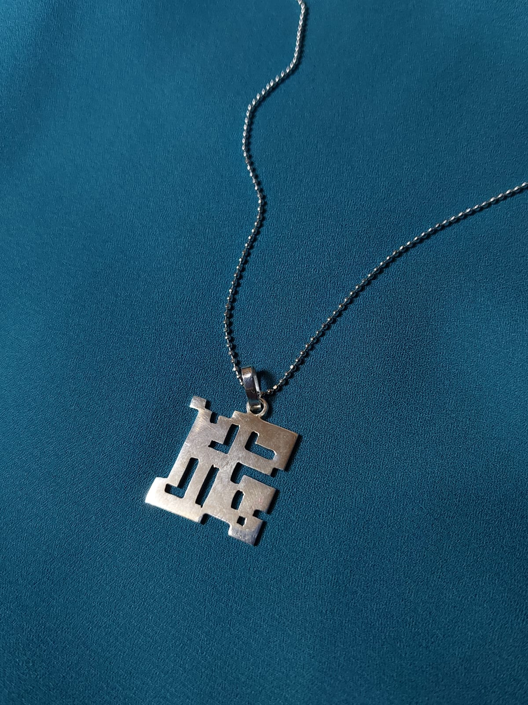
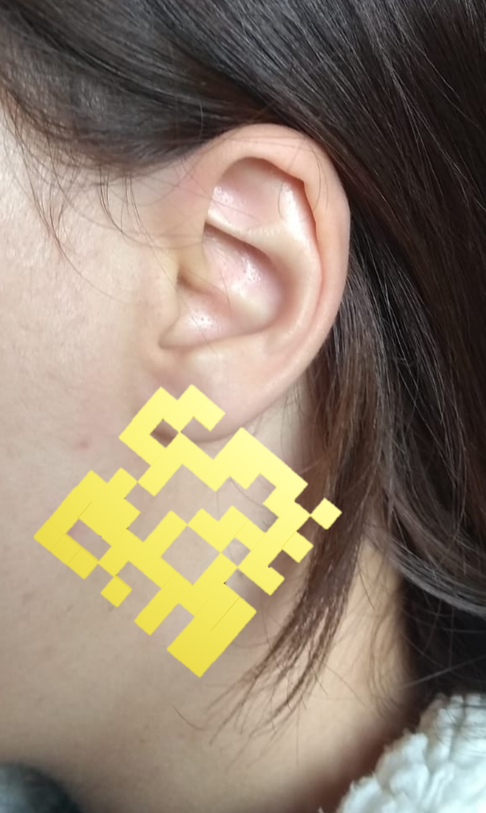
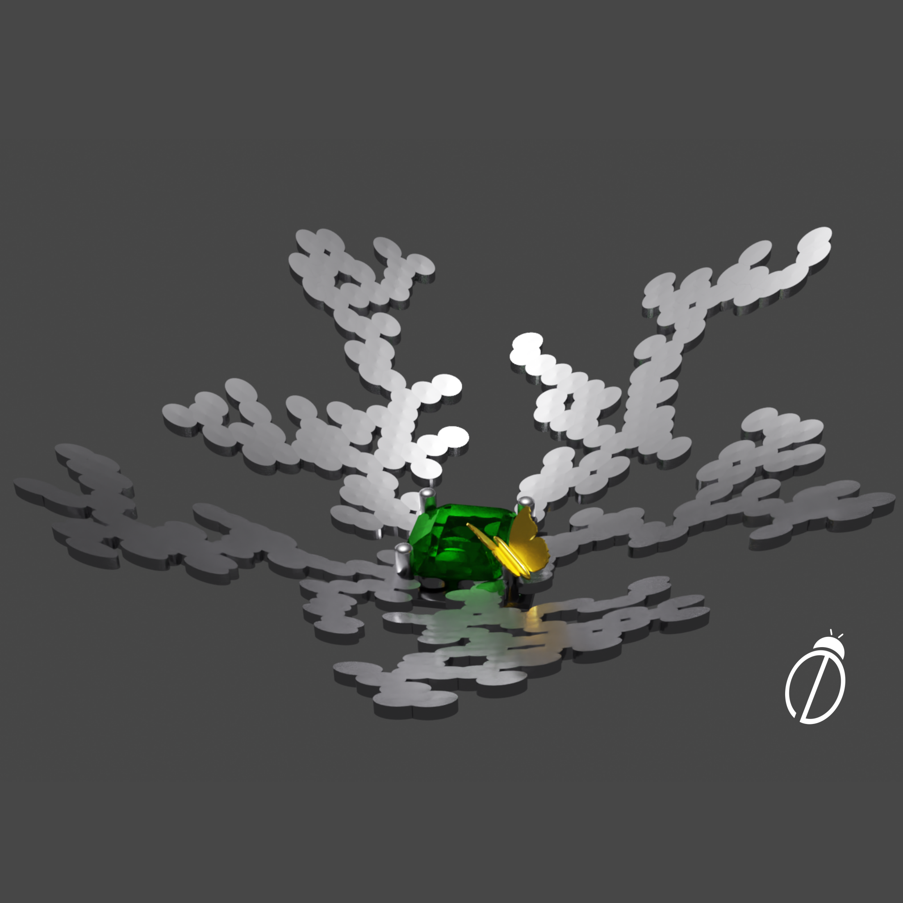
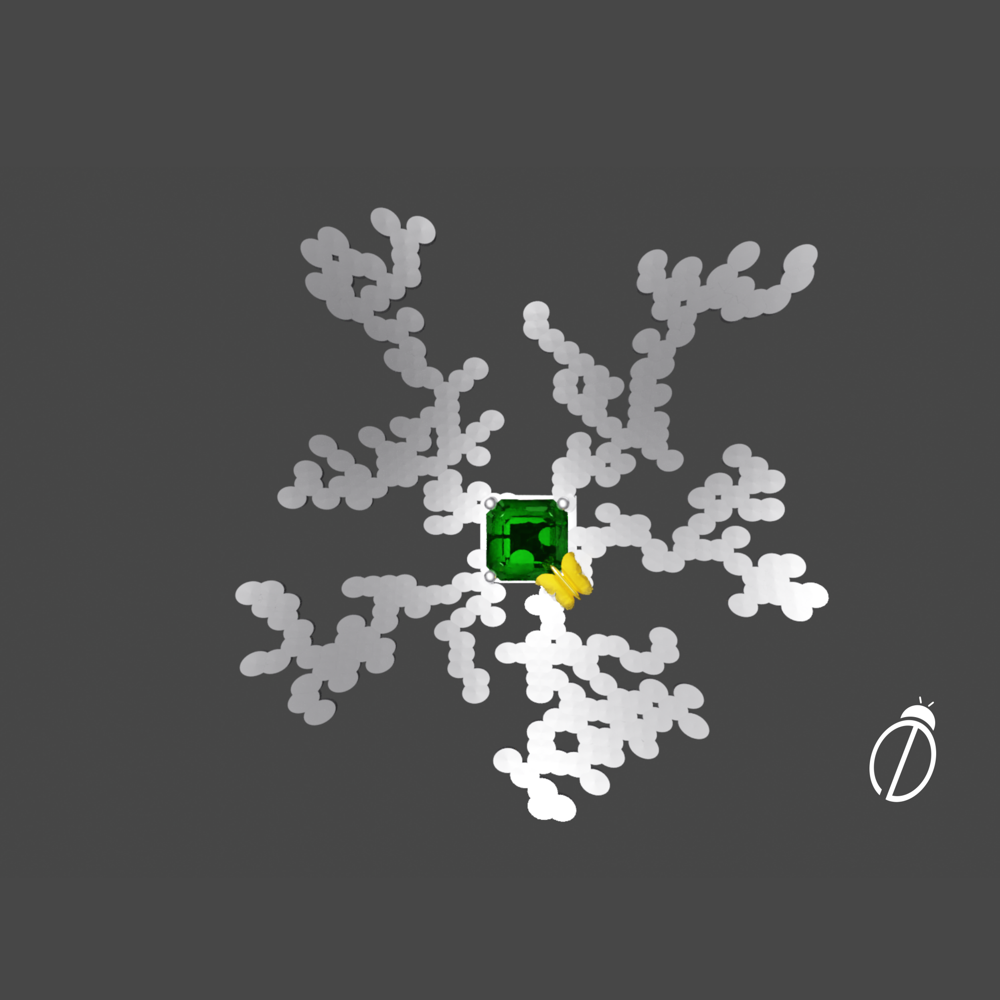
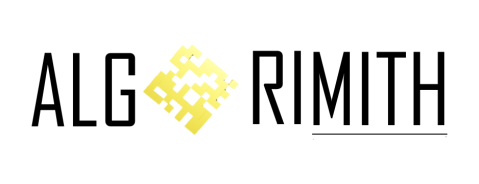
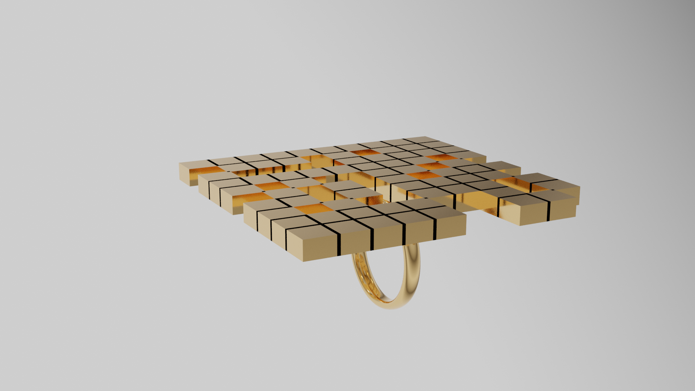
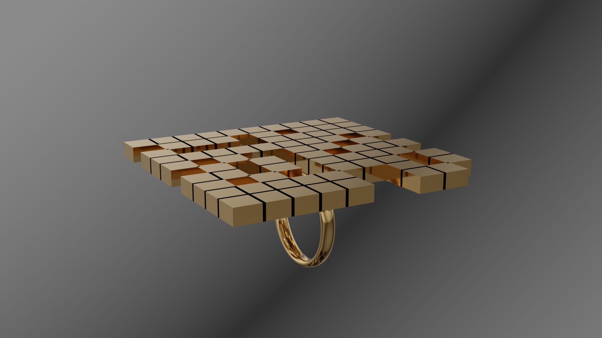
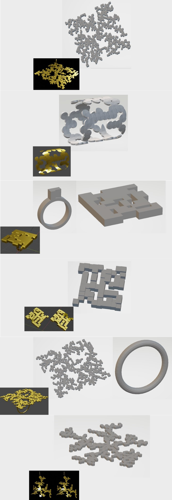

Galeria



.JPG)
.JPG)

.jpeg)
.jpeg)








Este projeto é fruto de uma linha de investigação iniciada em 2021 sobre design generativo aplicado à criação de artefatos físicos. O objetivo inicial era explorar como algoritmos computacionais poderiam atuar como agentes criativos na geração de formas para joias, indo além do papel tradicional do computador como ferramenta de representação ou modelagem. A pesquisa concentrou-se principalmente no estudo do Jogo da Vida de Conway (JVC) e do Diffusion Limited Aggregation (DLA), dois sistemas capazes de produzir estruturas complexas a partir de regras relativamente simples.
Ao longo da monografia, foram desenvolvidos diferentes experimentos voltados para a geração automática de geometrias destinadas à fabricação digital de joias. Embora os algoritmos demonstrassem grande potencial para a criação de formas inéditas, o processo também revelou desafios relacionados à conectividade estrutural, resistência mecânica, parametrização dos sistemas e adaptação das geometrias aos processos produtivos. Esses resultados evidenciaram que a geração computacional não elimina a necessidade do design, mas transforma o papel do designer em alguém responsável por definir regras, interpretar resultados, selecionar alternativas e atribuir significado aos artefatos produzidos.
O projeto AlgoriMith surge como uma evolução natural dessa investigação. Em vez de restringir-se à geração automática de formas tridimensionais para joias, a proposta amplia o escopo para explorar sistemas computacionais como instrumentos de criação estética, construção de identidades visuais e desenvolvimento de artefatos digitais e físicos. O próprio nome do projeto nasce da combinação entre as palavras algoritmo e mito, refletindo o interesse em aproximar processos matemáticos de narrativas simbólicas e referências culturais.
Essa associação foi inspirada pelas interpretações realizadas pelos participantes da pesquisa original, que frequentemente relacionavam as formas produzidas pelos algoritmos a elementos orgânicos, labirintos, raízes, árvores e estruturas naturais. A partir dessas observações, foi construída uma identidade conceitual inspirada na mitologia grega, aproximando os padrões derivados do Jogo da Vida de Conway do Labirinto do Minotauro e as estruturas orgânicas produzidas pelo DLA de referências associadas à deusa Gaia. Dessa forma, o projeto procura investigar não apenas a geração automática de formas, mas também a capacidade humana de atribuir significado, narrativa e simbolismo a padrões emergentes produzidos por sistemas computacionais.
Os desdobramentos dessa pesquisa ultrapassaram o contexto acadêmico. Em 2024, uma das joias desenvolvidas a partir desses experimentos foi selecionada como semifinalista do Singapore Jewelry Design Awards na categoria Exquisite AI. Além disso, muitas das ideias exploradas neste trabalho serviram como base para projetos posteriores envolvendo criatividade computacional, inteligência artificial generativa, design procedural e coautoria entre humanos e sistemas computacionais.
O desenvolvimento do projeto ocorreu de forma iterativa, combinando pesquisa teórica, experimentação computacional e prototipação digital. Inicialmente foram estudadas referências relacionadas à arte generativa, design computacional, sistemas emergentes, teoria da complexidade e fabricação digital. Esses referenciais serviram tanto para fundamentar as escolhas metodológicas quanto para orientar a construção da identidade conceitual do projeto.
Em seguida, foram implementados e analisados diferentes algoritmos generativos, com destaque para o Jogo da Vida de Conway e o Diffusion Limited Aggregation. Cada sistema produzia características visuais distintas: enquanto o JVC tendia a gerar estruturas mais geométricas e labirínticas, o DLA produzia padrões ramificados que remetiam a processos naturais de crescimento. A investigação concentrou-se em compreender como parâmetros específicos influenciavam a formação das geometrias e como esses resultados poderiam ser convertidos em objetos viáveis para o contexto da joalheria.
Os modelos gerados passaram por sucessivas etapas de avaliação e refinamento. Foram analisados aspectos relacionados à conectividade das estruturas, espessura mínima dos elementos, estabilidade geométrica e potencial de fabricação. Paralelamente, realizou-se um processo contínuo de curadoria visual, no qual as formas produzidas pelos algoritmos eram interpretadas, selecionadas e adaptadas para diferentes aplicações. Esse processo reforçou uma dinâmica de coautoria entre designer e sistema computacional, em que o algoritmo atua como gerador de possibilidades formais e o designer como responsável pela atribuição de significado, contexto e intenção estética aos resultados obtidos.
Ferramentas utilizadas: AlgoriMith foi desenvolvido utilizando Python como linguagem principal de programação, tendo o Blender como ambiente de modelagem, visualização e experimentação tridimensional. Foram implementados algoritmos generativos baseados no Jogo da Vida de Conway (JVC) e no Diffusion Limited Aggregation (DLA), explorando diferentes abordagens para a geração automática de geometrias aplicáveis ao design de joias. Parte dos experimentos computacionalmente mais intensivos foi conduzida em Jupyter Notebooks, permitindo a análise e manipulação dos dados gerados pelos algoritmos antes de sua materialização em modelos tridimensionais. O processo também envolveu refinamento geométrico, aplicação procedural de materiais, adaptação para diferentes tipologias de joias — como anéis, brincos e pingentes — e preparação dos modelos para prototipagem por impressão 3D.
O projeto resultou em uma coleção de experimentos que demonstram o potencial dos sistemas generativos como ferramentas de exploração criativa no design. Mais do que produzir peças específicas, a pesquisa permitiu investigar como regras matemáticas simples podem dar origem a estruturas complexas, revelando novas possibilidades de colaboração entre designer e algoritmo.
Um dos principais aprendizados foi compreender que a qualidade dos resultados depende não apenas do algoritmo utilizado, mas também das decisões tomadas durante sua parametrização, interpretação e refinamento. Muitas das limitações observadas ao longo do processo estavam menos relacionadas aos sistemas generativos em si e mais às restrições impostas pelos processos de fabricação, pelas escolhas de modelagem e pelos critérios adotados para seleção das soluções produzidas.
O trabalho também evidenciou a importância da prototipação como etapa fundamental do design computacional. A materialização das formas revelou aspectos estruturais, ergonômicos e produtivos que não eram perceptíveis apenas na visualização digital, reforçando a necessidade de aproximar experimentação algorítmica e fabricação física.
Em retrospecto, AlgoriMith representa um marco importante na minha trajetória por ter sido o projeto que consolidou minha visão do computador como parceiro criativo. Foi a partir dessas investigações que passei a compreender algoritmos não apenas como ferramentas técnicas, mas como meios capazes de ampliar processos criativos, gerar novas possibilidades estéticas e estabelecer diálogos entre matemática, design, natureza, cultura e fabricação digital. Muitas das pesquisas e projetos desenvolvidos posteriormente em criatividade computacional e inteligência artificial têm origem direta nas ideias exploradas aqui.







